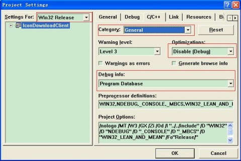
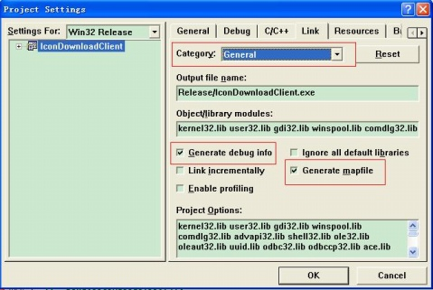

VC6调试 你可能遇到下面情况，程序开发和调试都在Debug下进行，当最后发布的时候却发现，Release版本下编译通不过，或者运行时出错，而在Debug版本下无任何问题。特别是在工程很大很复杂时，这种情况时有发生。这时你可能后悔莫及当初为啥不直接在Release版本下开发和调试呢？确实如此，我们完全可以狠心的抛弃Debug版本。把自己的灵魂和肉体全部交给Release版本，既然如此我们如何做呢，黑简单！Debug 和 Release 并没有本质的界限，他们只是一组编译选项的集合，编译器只是按照预定的选项行动。事实上，我们甚至可以修改这些选项，从而得到优化过的调试版本或是带跟踪语句的发布版本。记住，Release版本由于代码优化，有些变量是观察不到的，行的运行顺序可能也会不同。 VC6.0 Release 版本下调试运行设置 project->Settings 选择release版本 c/c++选项卡设置：category：General, Optimizations：Disable（Debug）,Debug info： program database,  Link选项卡设置如下：Category选 Debug，选中Debug info 复选框和Microsoft format。  C运行时库设置 在昨日的项目中,更新了其他人的Source与Project文件之后,程序运行总是抛出异常。跟踪调试的结果是一处内存释放引起的异常，但是明显感觉这不是导致问题的真正原因。所以在项目配置方面进行了比较，发现新更新的项目使用Debug MultithreadDLL选项，而其他相关项目使用DebugMultithread选项，他们不能够混合使用？修改成Debug Multithread就没有问题了。 C运行时库除了给我们提供必要的库函数调用（如memcpy、printf、malloc等）之外，它提供的另一个最重要的功能是为应用程序添加启动函数。C运行时库启动函数的主要功能为进行程序的初始化，对全局变量进行赋初值，加载用户程序的入口函数。Visual C++提供的多线程运行时库又分为静态链接库和动态链接库两类，而每一类运行时库又可再分为debug版和release版，因此Visual C++共提供了6个运行时库。如下表： C运行时库 库文件 Single thread(static link) libc.lib Debug single thread(static link) libcd.lib MultiThread(static link) libcmt.lib Debug multiThread(static link) libcmtd.lib MultiThread(dynamic link) msvert.lib Debug multiThread(dynamic link) msvertd.lib 参见 Debug和Release区别 VC++中的C运行时库浅析 VC++中debug跟release编译模式的区别总结 父主题： C++开发